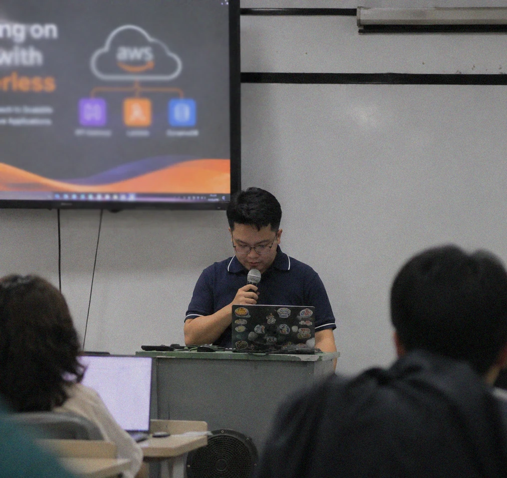

Hello, I’m
Jervil Angelo De Leon
IT Professional | 2x AWS Certified & 2x OCI Certified
I specialize in IT support and technical problem-solving, with a growing focus on cloud infrastructure, automation, and modern technologies. I'm continuously expanding my expertise in designing, deploying, and managing reliable, scalable systems.
- 10
- Projects built
- 21
- AWS services used
- 13
- Certifications


AWS services used in my projects include Lambda, S3, DynamoDB, EC2, API Gateway, Cognito, Amplify, CloudWatch, IAM, VPC, SNS and EventBridge.
Selected projects
Spread the stack to browse all ten projects.
-
AWS · Serverless
AWS Serverless Ticketing API
Support tickets with DynamoDB and automated alerts.
-
AWS · Infrastructure
Secure EC2 Web Server
A hardened Nginx server on AWS.
-
HRIS · Automation
HRIS Template Completion Tracker
Automated checks for HRIS template completion.
-
Web · Nonprofit
ECCM Website
A responsive website for a local church.
-
Timeline · Planning
Schedrift
Project timelines, dependencies, and delay simulation.
-
Next.js · AWS
Teolohiya.site
A Philippine theological-book listing platform.
-
Web · Finance
PinansyalPH
Philippine financial calculators and data visualizations.
-
AWS · Terraform
BayanihanDR
Disaster recovery on AWS with Terraform and verified backups.
-
AWS · CloudOps
Opsentra
AWS incident detection, audited remediation, and recovery verification.
-
Browser extension · AWS
Resolve
Privacy-first browser protection and voluntary accountability.

A little more about me
I've loved technology since childhood, which led me to pursue a degree in IT specializing in Animation and Game Development. It gave me a foundation in both creativity and programming. Over time, my interests grew into software development, hardware troubleshooting, IT support, and cloud computing.
I love reading books, learning new technologies, and building applications that people can use freely. As I work toward a career in Cloud Engineering, my goal goes beyond writing code. I want to create tools that solve real problems, make a ripple effect in people's lives, and ultimately bring glory to God.
More about me